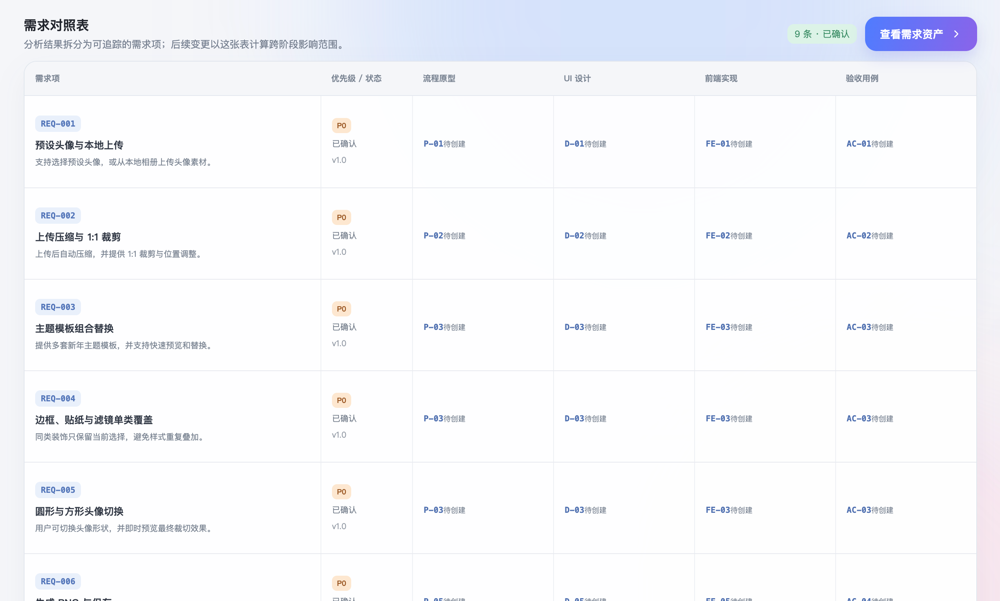

信息割裂
需求、原型、UI 与代码由不同角色独立完成，口头沟通和 Excel 无法形成统一项目事实。
能力建设汇报
当需求来自运营，UI 交给设计师，开发转由工程师完成，或我们更换一个 AI 工具，项目都不应回到“重新解释一遍”的起点。
当前协作断点
业务、产品、设计、研发等角色仍主要通过口头沟通和 Excel 台账传递需求。每个角色都在推进自己的工作，但需求、原型、UI 与代码之间缺少可关联、可确认、可追溯的共同载体。
口头沟通 + Excel需求变化被手工记录在阶段之间，无法自动关联后续产物。
需求、原型、UI 与代码由不同角色独立完成，口头沟通和 Excel 无法形成统一项目事实。
需求临时调整后，影响范围无法自动关联和追溯，多角色只能各自修改、反复确认。
运营、设计、工程在不同阶段介入时，缺少与其职责匹配的清晰交付物和验收依据。
更换 AI 工具或离开当前对话后，已确认的规则、视觉与实现状态容易断裂或偏移。
我们不需要让 AI 全栈复刻传统流程，而是要让工作成果能在传统角色和不同 AI 工具之间随时切换。四视图工作法以可交接的项目事实为基础，支持传统工作流平滑过渡到 AI 全栈工作流。
真正需要被管理的，不是工具使用顺序，而是项目事实能否在不同执行者之间保持完整。
四视图的共同原则
它们不必因工具或代码形式不同而割裂。真正的区分是面向谁交付，以及需要证明到什么程度。
它证明用户能否顺畅走完核心路径，并让产品、设计在投入实现前确认关键判断。
它在原型的基础上承担真实行为、数据边界、例外状态、验证证据和可交付性。
解决方案
它们不是四份为了齐全而创建的文档，更不是自动同步的“唯一真相”。每个视图按关注点拥有事实，再通过状态、映射与验收暴露不一致。
目标边界、业务规则、数据边界与验收条件。
让口头需求变为可确认、可追溯的项目约束。
运营 / 产品输入，测试验收，AI 任务拆解。
主路径、状态清单、操作反馈与异常处理。
让流程不只停留在主路径，关键状态可被完整确认。
产品确认，设计编排，测试覆盖，AI 连续推理。
关键状态帧、组件规则、资产边界与响应式规范。
让视觉表现与状态含义保持一致，避免动态信息被写死。
设计制作，前端实现，AI 定向修改与视觉验收。
可运行页面、API 契约、预览路径、验证与发布记录。
让状态、数据与版本可复现，不再以截图作为交付终点。
前后端联调，QA 验收，发布回溯，AI 修复与扩展。
《需求对照表》
它不是只记录需求的台账，而是变更的导航图。每条变更都标明影响视图、待更新交付物、验收动作与状态，让人和 AI 工具都能沿同一条路径完成同步。

对照表记录什么需求编号、变更原因、原规则、新规则、优先级与提出时间。
先确认边界明确这次调整改变了什么，以及哪些既有规则仍然有效。
对照到哪些视图需求视图、流程原型视图、视觉视图、运行视图的对应条目与当前状态。
判断影响范围不凭记忆判断，直接定位必须更新的规则、状态、资产、页面或接口。
更新哪些交付物同步修改受影响的业务规则、状态帧、组件与资源、页面、API 契约和验证记录。
让四视图重新对齐每个更新都有明确责任、完成状态与可查看的交付物链接。
如何确认完成按对照表逐项验证主路径、例外状态、视觉表现与运行结果。
留下版本证据记录验收结果和发布版本，下一次变更可以继续从这里追溯。
结论